df_flights <- read.csv("data/df_flights_enriched.csv")4 Plotting Data
Find the slides here
4.1 Introduction
Previous sessions: we set up R, and downloaded, scraped and merged datasets. Today we visualize data with graphs:
- Review the types of variables, and how they match to graph types.
- Learn how to plot data with LLMs and
ggplot2. - Discuss what makes a good graph and how to improve it.
4.1.1 Data Plots and Econometric Analysis
| Advantages | Disadvantages |
|---|---|
| Easy to read | Misleading: axis scales, colour use… |
| Shows variables’ distribution: outliers, skewness… | Omitted variables: only shows 2–3 at once. |
| Fewer assumptions: no functional form choice. | No causal effect, no significance test. |
Plots and econometric analysis are complements:
- Plots help to understand variables’ features and correlates.
- Econometric analysis establishes causal relationships and tests their significance.
The author holds significant discretion: be honest with yourself and your audience.
- Decide the purpose of the graph.
- Trade-offs: what to show, how to show it, and what to skip.
4.1.2 Types of Variables
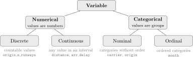
4.1.3 Types of Variables and Their Graphs
| Graph | X axis variable | Y axis variable | Shows | ggplot2 |
|---|---|---|---|---|
| Histogram | continuous | count per bin | distribution of a variable | geom_histogram() |
| Bar chart | categorical | count per category | number of obs. per category | geom_bar() |
| Box plot | categorical | continuous | distribution within category | geom_boxplot() |
| Scatter plot | continuous | continuous | correlation of two variables | geom_point() |
| Line graph | time | continuous | evolution of a variable | geom_line() |
TipReadability and information trade-off
- Colours, patterns or shapes can show additional categorical variables.
- More information can make the graph harder to read.
4.2 The ggplot2 Package
ggplot2 is the most widely used R package for graphs. A plot is built in layers joined with the + sign:
- Data layer:
ggplot(data, aes(...))identifies the dataset and its variables. - Graph layer:
geom_...()sets the type of graph (histogram, points, lines…). - Appearance layers:
labs(),theme(), … set the labels and appearance.
install.packages(c("ggplot2", "dplyr"))library(ggplot2)
library(dplyr)
Sys.setlocale("LC_TIME", "C") # English month names on date axes4.2.1 Manually Coding Graphs
Coding ggplot2 graphs manually is tedious and iterative: any minor mistake leads to an error message. Example: coding a histogram of arrival delays.
# Histogram of arrival delays
ggplot(df_flights, aes(x = arr_delay)) +
geom_histogram(bins = 30) +
labs(x = "Arrival delay (minutes)",
y = "Frequency")Warning: Removed 9430 rows containing non-finite outside the scale range
(`stat_bin()`).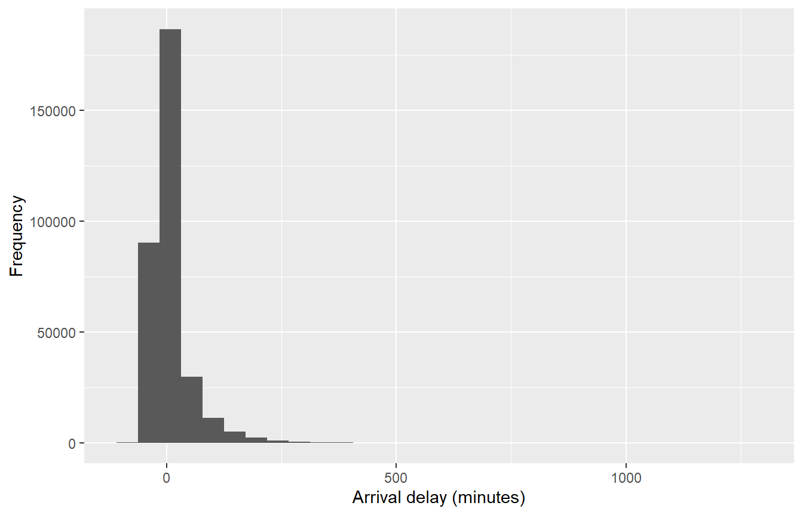
Cancelled flights have no arr_delay, so ggplot2 warns that it removed rows with missing values.
4.2.2 Vibecoding Graphs
LLM prompt → the LLM translates the prompt into an R script → new graph.
Avoid graph congestion: what is the purpose of the graph? A good prompt states:
- The programming language and the package.
- The dataset and the variable names.
- The type of graph.
The sections below follow the same steps for each graph: what it shows → prompt → code → graph → how to improve it.
4.3 Histogram
A histogram represents the distribution of a single continuous variable.
- Horizontal axis: the values of the variable, divided into intervals of equal width (bins).
- Vertical axis: the number of observations (frequency) whose value falls in each bin.
- The height of each bar is the count.
library(ggplot2)
ggplot(df_flights, aes(x = arr_delay)) +
geom_histogram(binwidth = 10,
fill = "steelblue",
color = "white",
na.rm = TRUE) +
labs(title = "Distribution of Arrival Delays",
x = "Arrival delay (minutes)",
y = "Number of flights") +
theme_minimal()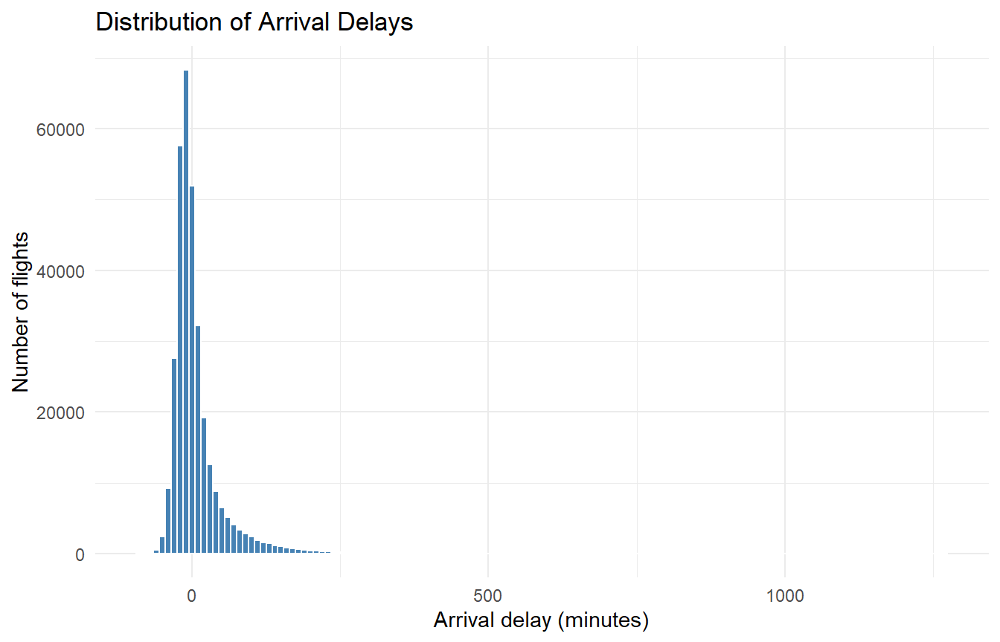
How would you improve this histogram?
4.3.1 Refining the Histogram
n_above <- sum(df_flights$arr_delay > 300,
na.rm = TRUE)
ggplot(df_flights, aes(x = arr_delay)) +
geom_histogram(binwidth = 10,
fill = "steelblue",
color = "white",
na.rm = TRUE) +
coord_cartesian(xlim = c(NA, 300)) +
labs(title = "Distribution of Arrival Delays",
x = "Arrival delay (minutes)",
y = "Number of flights",
caption = paste0(
"Note: horizontal axis limited to 300 ",
"minutes. ", n_above, " flights with ",
"longer delays are not shown.")) +
theme_minimal()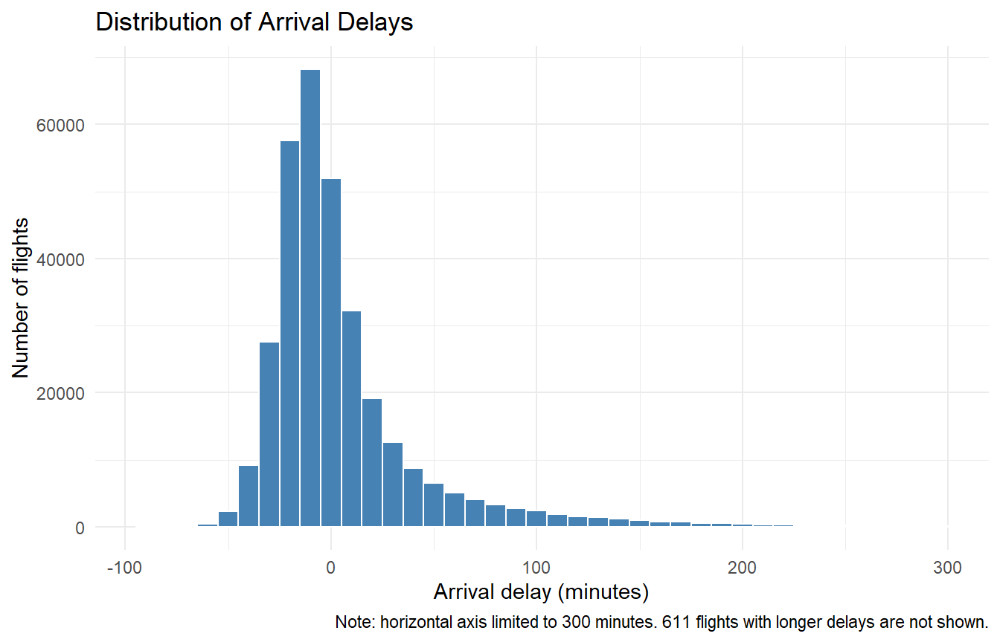
4.4 Bar Chart
A bar chart represents the frequency of a single categorical variable.
- Horizontal axis: the categories of the variable (months of the year), one bar per category.
- Vertical axis: the number of observations.
- The bar height is the observation count.
ggplot(df_flights,
aes(x = factor(month,
levels = 1:12,
labels = month.abb))) +
geom_bar(fill = "steelblue") +
labs(title = "Number of Flights per Month",
x = "Month",
y = "Number of flights") +
theme_minimal()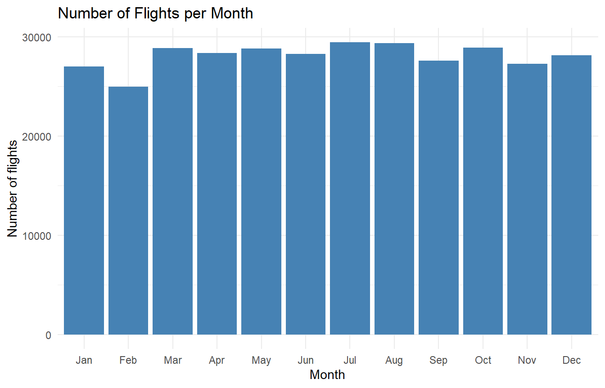
4.4.1 Stacked Colours
A second categorical variable can be shown with the colour of the bars.
- One colour per airport, shown in the legend.
- Each colour counts the flights in a month and from one airport.
- Stacked (default): the total bar height is still the monthly total.
library(ggplot2)
ggplot(df_flights,
aes(x = factor(month,
levels = 1:12,
labels = month.abb),
fill = origin)) +
geom_bar() + # stacked by default
labs(title = "Flights per Month by Origin",
x = "Month",
y = "Number of flights",
fill = "Origin") +
theme_minimal() +
theme(legend.position = "bottom")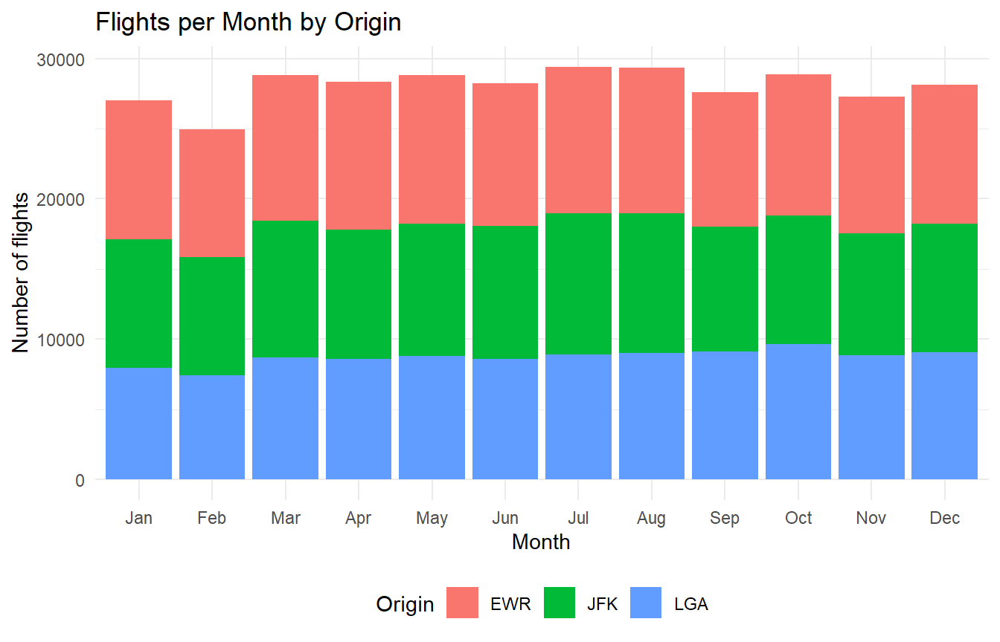
4.4.2 Side-by-Side Colours
Alternatively, the coloured bars can be placed side by side.
- One colour per airport, shown in the legend.
- Each colour counts the flights in a month and from one airport.
- One bar per airport within each month.
- Set with
position = "dodge".
library(ggplot2)
ggplot(df_flights,
aes(x = factor(month,
levels = 1:12,
labels = month.abb),
fill = origin)) +
geom_bar(position = "dodge") + # side by side
labs(title = "Flights per Month by Origin",
x = "Month",
y = "Number of flights",
fill = "Origin") +
theme_minimal() +
theme(legend.position = "bottom")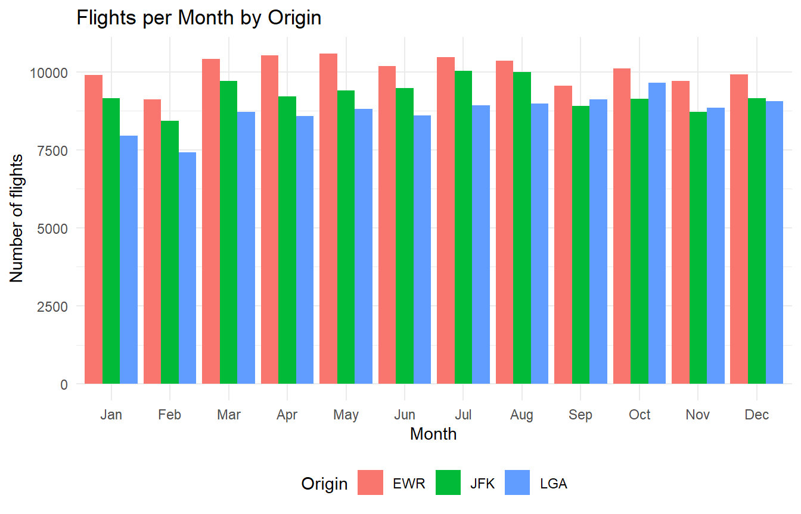
Stacked or side by side: which do you prefer? Why?
4.5 Box Plot
A box plot shows summary statistics of a continuous variable (arrival delay) within each category (airport of origin).
- Horizontal axis: the categories of the variable.
- Vertical axis: the continuous variable.
- The line inside the box is the median.
- The box ranges from the 25th to the 75th percentile.
- The whiskers extend to the most extreme values that lie within 1.5 box heights.
# Box plot without outliers
ggplot(df_flights, aes(x = origin, y = arr_delay)) +
geom_boxplot(outliers = FALSE) +
labs(x = "Airport of origin", y = "Arrival delay (minutes)")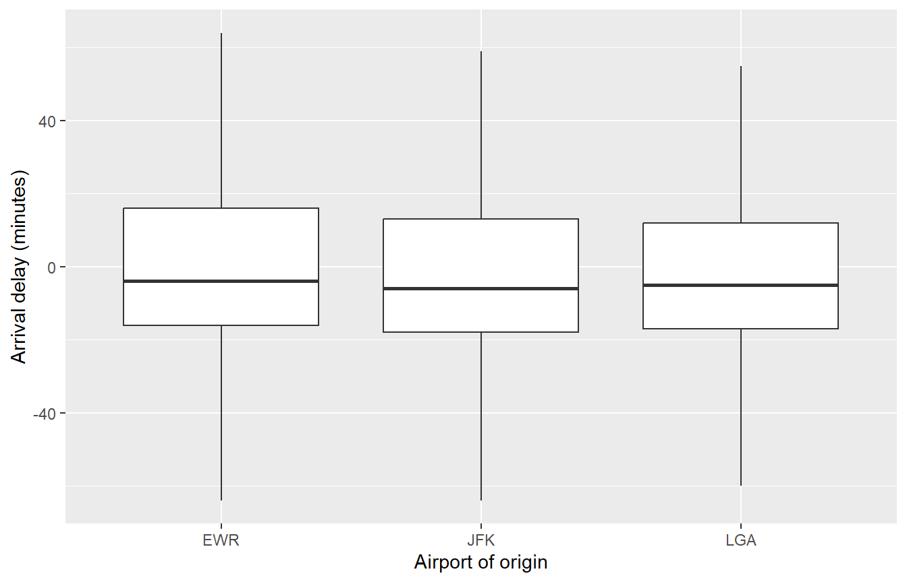
By default, the points outside the whiskers (outliers) are also shown:
# Box plot with outliers (default)
ggplot(df_flights, aes(x = origin, y = arr_delay)) +
geom_boxplot() +
labs(x = "Airport of origin", y = "Arrival delay (minutes)")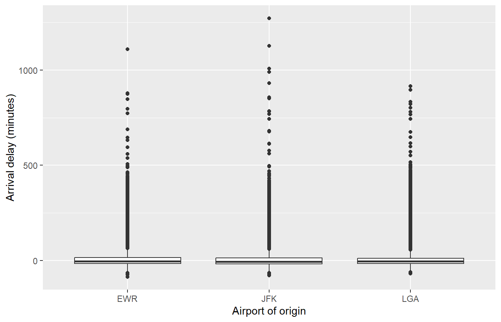
Decision: should we include outliers?
4.5.1 Adding Categories with Colours
A second categorical variable (month of the year) can be shown with the colour of the boxes.
- One colour per month of the year, shown in the legend.
- Within each airport, the boxes of each month are placed side by side.
- Each box summarises the delays of the flights from one airport and in one month.
- With 12 categories, that is 36 boxes: hard to read and to compare.
ggplot(df_flights, aes(x = origin, y = arr_delay, fill = factor(month))) +
geom_boxplot(outliers = FALSE) +
labs(x = "Airport of origin", y = "Arrival delay (minutes)", fill = "Month") +
theme(legend.position = "bottom")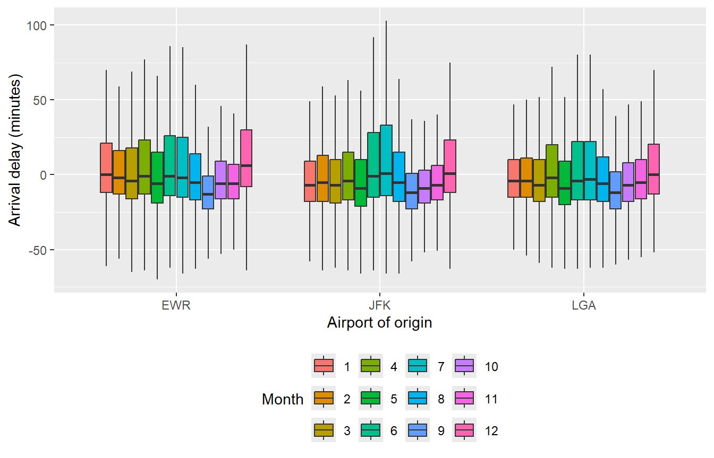
What does the graph show? How can we improve it?
4.6 Scatter Plot
A scatter plot represents the correlation between two continuous variables (distance and arrival delay).
- Horizontal axis: the first continuous variable (distance in miles).
- Vertical axis: the second continuous variable (arrival delay in minutes).
- Each point is one observation (one flight), placed at its distance and its delay.
- With many observations, points overlap: transparency (
alpha = 0.2) shows where they concentrate.
library(ggplot2)
ggplot(df_flights,
aes(x = distance,
y = arr_delay)) +
geom_point(alpha = 0.2, # many points
color = "steelblue",
na.rm = TRUE) +
labs(title = "Arrival Delay vs. Distance",
x = "Distance (miles)",
y = "Arrival delay (minutes)") +
theme_minimal()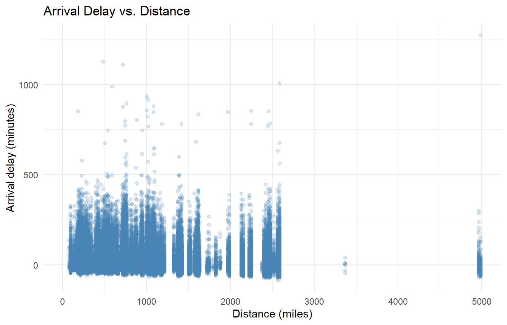
What does the plot show?
4.6.1 Binscatter Plot
When scatter plots are too crowded, they can be summarized with a binscatter plot: each point is the average of x and y within one bin of x.
- Horizontal axis: the first variable (distance), divided into 20 bins with the same number of flights each.
- Vertical axis: the mean of the second variable (arrival delay) within each bin.
- Each point is one bin, not one flight.
# 20 bins of distance, equal number of flights
df_bins <- df_flights |>
filter(!is.na(arr_delay)) |>
mutate(bin = ntile(distance, 20)) |>
group_by(bin) |>
summarise(distance = mean(distance),
arr_delay = mean(arr_delay))
ggplot(df_bins, aes(x = distance,
y = arr_delay)) +
geom_point(size = 2) +
labs(x = "Distance (miles)",
y = "Mean arrival delay (minutes)",
caption = paste(
"Note: 20 distance bins with equal",
"numbers of flights. Points are bin",
"means. Cancelled flights excluded.",
sep = "\n"))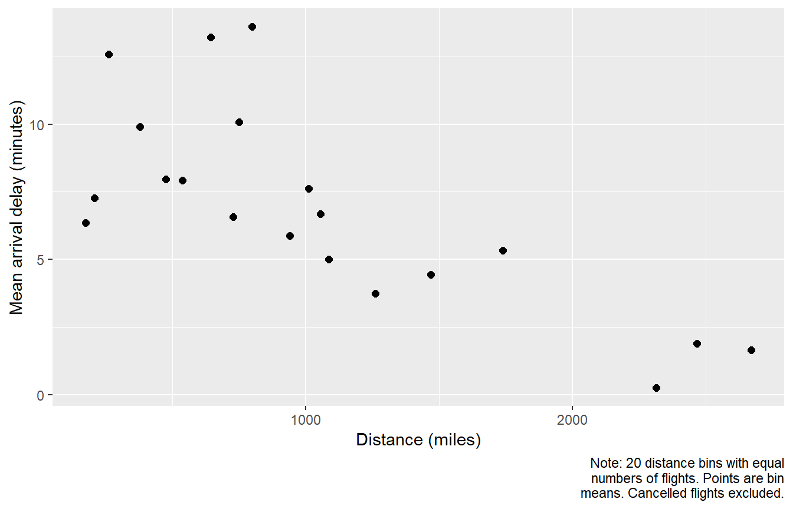
The hidden pattern emerges: longer flights arrive, on average, with shorter delays.
4.6.2 Binscatter: Adding Categories with Colours
# Same 20 bins, means by bin and airport
df_bins <- df_flights |>
filter(!is.na(arr_delay)) |>
mutate(bin = ntile(distance, 20)) |>
group_by(bin, origin) |>
summarise(distance = mean(distance),
arr_delay = mean(arr_delay))
ggplot(df_bins, aes(x = distance,
y = arr_delay,
colour = origin)) +
geom_point(size = 2) +
labs(x = "Distance (miles)",
y = "Mean arrival delay (minutes)",
colour = "Origin",
caption = paste(
"Note: same 20 distance bins for all airports.",
"Points are bin means for each airport.",
"Cancelled flights (no delay) excluded.",
sep = "\n"))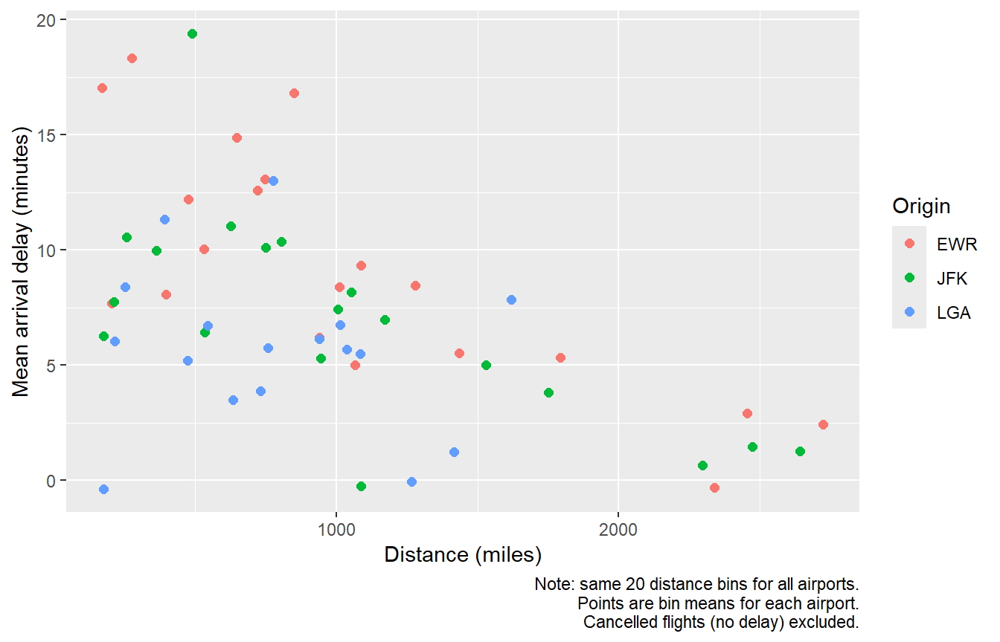
4.7 Line Graph
A line graph shows how one continuous variable evolves over time.
- Horizontal axis: time (here, each day of 2013).
- Vertical axis: the value of the variable at each date (here, the number of flights that day).
- Points are connected in time order.
library(ggplot2)
library(dplyr)
# Count the flights of each day
daily <- df_flights |>
mutate(date = as.Date(
paste(year, month, day, sep = "-"))) |>
count(date)
ggplot(daily, aes(x = date, y = n)) +
geom_line(color = "steelblue") +
labs(title = "Number of Flights per Day",
x = "Date",
y = "Number of flights") +
theme_minimal()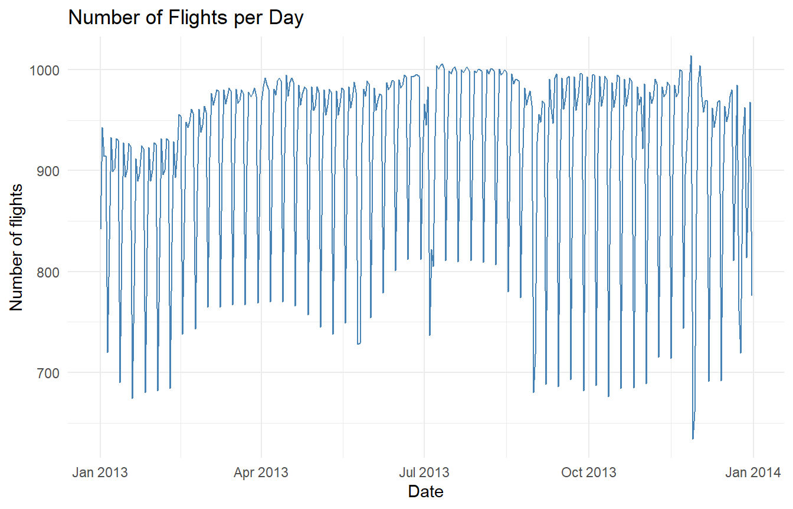
What does the graph show? How can we improve it?
4.7.1 Aggregating to Months
The time unit we choose changes what the graph shows.
- Daily counts are noisy: weekdays and weekends alternate.
- Aggregating to months smooths the noise and shows the seasonal pattern.
- Decision: the time unit (day, week, month) is the author’s choice.
library(ggplot2)
library(dplyr)
# Count the flights of each month
monthly <- df_flights |>
mutate(ym = as.Date(
paste(year, month, 1, sep = "-"))) |>
count(ym)
ggplot(monthly, aes(x = ym, y = n)) +
geom_line(color = "steelblue") +
geom_point(color = "steelblue") +
scale_x_date(date_breaks = "1 month",
date_labels = "%b") +
labs(title = "Number of Flights per Month",
x = "Month",
y = "Number of flights") +
theme_minimal()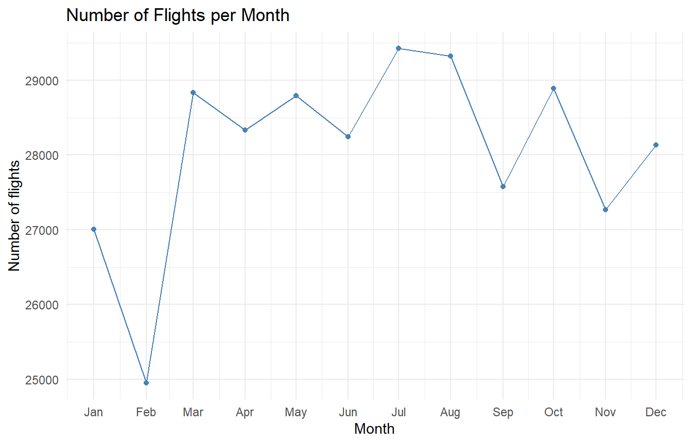
What is happening in February?
4.7.2 Starting the Vertical Axis at Zero
Where the vertical axis starts changes how large the changes look.
- By default,
ggplot2zooms the vertical axis on the range of the data. - Small changes then look dramatic.
- Starting at zero shows their true size: every month has roughly 25,000 to 29,500 flights.
# Same monthly data as before
ggplot(monthly, aes(x = ym, y = n)) +
geom_line(color = "steelblue") +
geom_point(color = "steelblue") +
expand_limits(y = 0) + # axis from zero
scale_x_date(date_breaks = "1 month",
date_labels = "%b") +
labs(title = "Number of Flights per Month",
x = "Month",
y = "Number of flights") +
theme_minimal()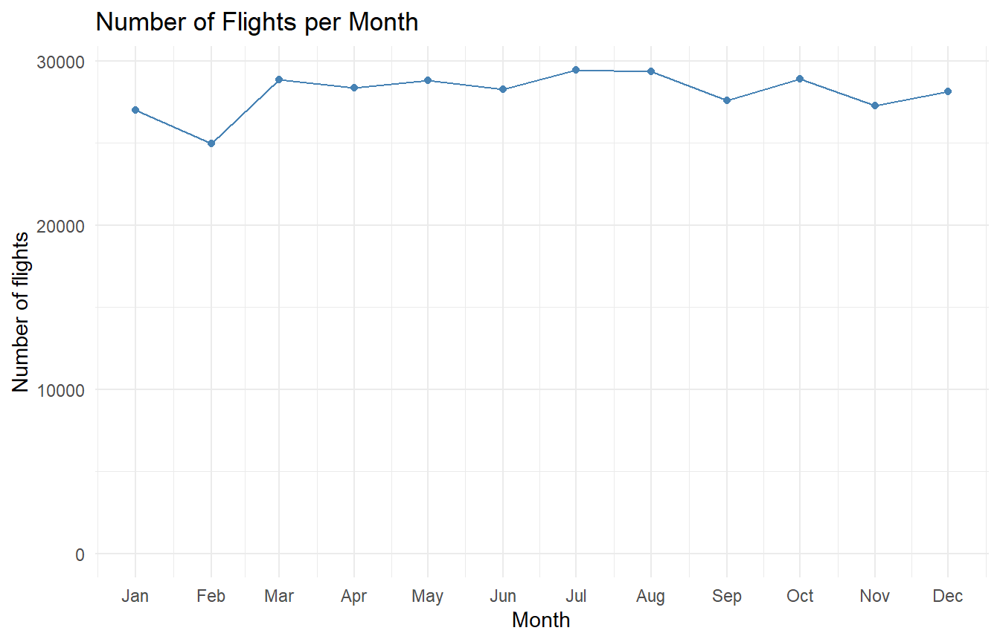
4.7.3 Adding Categories with Colours
A categorical variable can be shown with one line per category.
- One colour per airport, shown in the legend.
- Each point counts the flights in a month and from one airport.
- Lines make it easy to compare trends across airports.
# Count the flights of each month and airport
monthly_origin <- df_flights |>
mutate(ym = as.Date(
paste(year, month, 1, sep = "-"))) |>
count(ym, origin)
ggplot(monthly_origin, aes(x = ym, y = n,
colour = origin)) +
geom_line() +
geom_point() +
expand_limits(y = 0) +
scale_x_date(date_breaks = "1 month",
date_labels = "%b") +
labs(title = "Flights per Month by Origin",
x = "Month", y = "Number of flights",
colour = "Origin") +
theme_minimal() +
theme(legend.position = "bottom")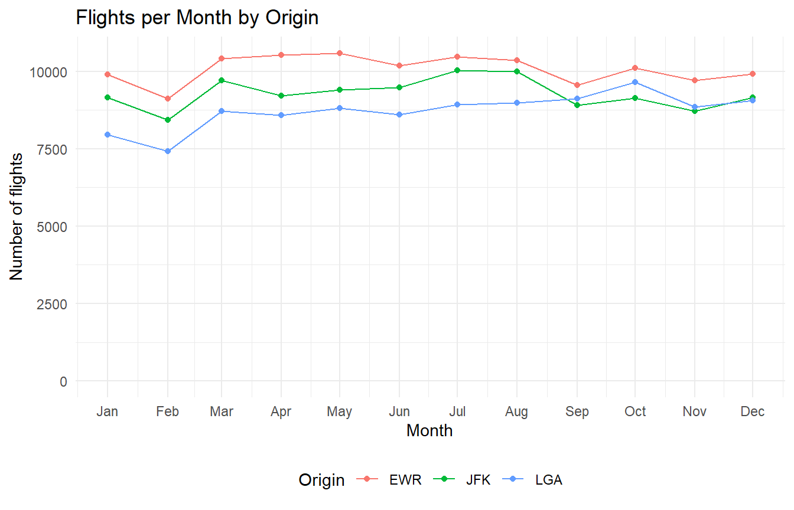
4.7.4 Comparisons in Percentages
Airports of different sizes can be compared with an index.
- Raw counts differ in size across airports: their changes are hard to compare.
- Each airport’s first full week is set to 100; the graph shows the % change from it.
- All lines start at 0%: they show relative changes.
- Decisions: the baseline period and the time unit (weeks).
weekly <- df_flights |>
# week = Monday that starts each week
mutate(date = as.Date(paste(year, month, day,
sep = "-")),
week = as.Date(cut(date, "week"))) |>
group_by(origin, week) |>
summarise(n = n(), days = n_distinct(date),
.groups = "drop") |>
# drop incomplete weeks (start/end of year)
filter(days == 7) |>
group_by(origin) |>
mutate(index = 100 * n / first(n),
pct_change = index - 100) |>
ungroup()
ggplot(weekly, aes(x = week, y = pct_change,
colour = origin)) +
geom_hline(yintercept = 0, linetype = "dashed") +
geom_line() + geom_point(size = 1) +
scale_x_date(date_breaks = "1 month",
date_labels = "%b") +
labs(x = "Week", y = "Change in flights (%)",
colour = "Origin",
caption = paste("Note: first full week of 2013 = 100.",
"Incomplete weeks excluded."))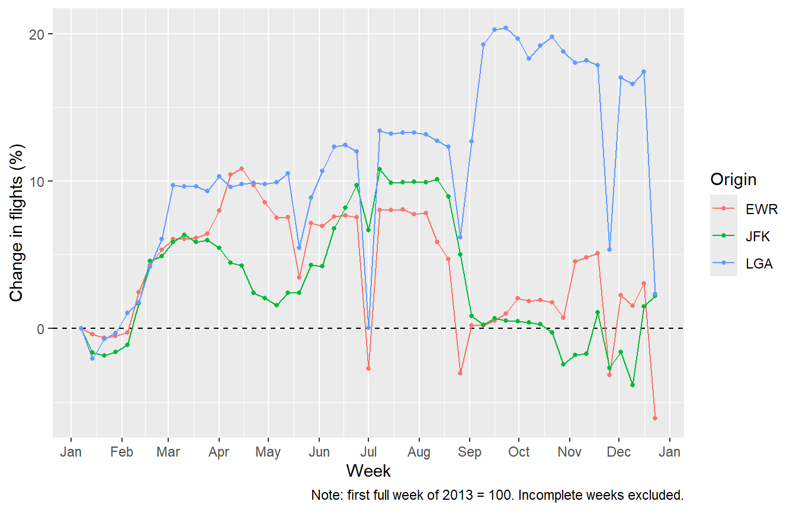
4.8 Summary
Graphs and econometric models
- + Easy to read, show whole distributions, no functional form.
- - Only 2–3 variables at once, no causal effect, no significance test.
Graphs for preliminary analysis
- Plot before you estimate: distributions, outliers, missing values, patterns.
- Choose the graph type wisely: what is the purpose of the visualization?
Vibecoding graphs with the ggplot2 package in R
- A precise prompt: language and package, dataset and variable names, graph type.
- Read the code, check the graph, and iterate with follow-up prompts.